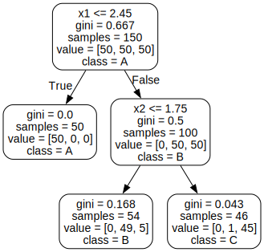

BDTs Demo Plots
Contents
BDTs Demo Plots#
Inspired from iris dataset but using \(x_1\) and \(x_2\) (?)
Get iris data and rename features + target#
import pandas as pd
import numpy as np
from sklearn.datasets import load_iris
from myst_nb import glue
iris = load_iris()
iris.feature_names
['sepal length (cm)',
'sepal width (cm)',
'petal length (cm)',
'petal width (cm)']
df_iris = pd.DataFrame(data= np.c_[iris['data'], iris['target']],
columns= iris['feature_names'] + ['target'])
df_iris.head(5)
| sepal length (cm) | sepal width (cm) | petal length (cm) | petal width (cm) | target | |
|---|---|---|---|---|---|
| 0 | 5.1 | 3.5 | 1.4 | 0.2 | 0.0 |
| 1 | 4.9 | 3.0 | 1.4 | 0.2 | 0.0 |
| 2 | 4.7 | 3.2 | 1.3 | 0.2 | 0.0 |
| 3 | 4.6 | 3.1 | 1.5 | 0.2 | 0.0 |
| 4 | 5.0 | 3.6 | 1.4 | 0.2 | 0.0 |
import seaborn as sns
sns.jointplot(x = "petal length (cm)", y = "petal width (cm)", kind = "scatter", hue = 'target', data = df_iris)
<seaborn.axisgrid.JointGrid at 0x10f858610>
df = pd.DataFrame(data=iris['data'], columns=iris.feature_names)
# Renaming columns
df['x1'] = df['petal length (cm)']
df['x2'] = df['petal width (cm)']
df['y'] = iris.target
df['class'] = df['y'].replace(to_replace= [0, 1, 2], value = ['A', 'B', 'C'])
df.head(5)
| sepal length (cm) | sepal width (cm) | petal length (cm) | petal width (cm) | x1 | x2 | y | class | |
|---|---|---|---|---|---|---|---|---|
| 0 | 5.1 | 3.5 | 1.4 | 0.2 | 1.4 | 0.2 | 0 | A |
| 1 | 4.9 | 3.0 | 1.4 | 0.2 | 1.4 | 0.2 | 0 | A |
| 2 | 4.7 | 3.2 | 1.3 | 0.2 | 1.3 | 0.2 | 0 | A |
| 3 | 4.6 | 3.1 | 1.5 | 0.2 | 1.5 | 0.2 | 0 | A |
| 4 | 5.0 | 3.6 | 1.4 | 0.2 | 1.4 | 0.2 | 0 | A |
Training and Visualizing a Decision Tree#
#pip install graphviz
# to make this notebook's output stable across runs
np.random.seed(42)
# To plot pretty figures
%matplotlib inline
import matplotlib as mpl
import matplotlib.pyplot as plt
# Where to save the figures
import os
PROJECT_ROOT_DIR = ".."
IMAGES_PATH = os.path.join(PROJECT_ROOT_DIR, "images")
from sklearn.tree import DecisionTreeClassifier
X = df[['x1', 'x2']]
y = df[['y']]
tree_clf = DecisionTreeClassifier(max_depth = 2)
tree_clf.fit(X, y)
DecisionTreeClassifier(max_depth=2)
from graphviz import Source
from sklearn.tree import export_graphviz
out_f = "BDTs_viz_tree.dot"
export_graphviz(
tree_clf,
out_file = os.path.join(IMAGES_PATH, out_f),
feature_names = ['x1', 'x2'],
class_names = ['A', 'B', 'C'],
rounded = True,
filled = False
)
Source.from_file(os.path.join(IMAGES_PATH, out_f))

Decision Tree Boundaries#
from matplotlib.colors import ListedColormap
def plot_decision_boundary(clf, X, y, axes=[0, 7.5, 0, 3], xlabel=r"$x_1$", ylabel=r"$x_2$", legend=False, plot_training=True):
# Get a grid of values
x1s = np.linspace(axes[0], axes[1], 100)
x2s = np.linspace(axes[2], axes[3], 100)
x1, x2 = np.meshgrid(x1s, x2s)
X_new = np.c_[x1.ravel(), x2.ravel()]
y_pred = clf.predict(X_new).reshape(x1.shape)
custom_cmap = ListedColormap(["mistyrose",'cornflowerblue','#a0faa0'])
plt.contourf(x1, x2, y_pred, alpha=0.3, cmap=custom_cmap)
if plot_training:
plt.plot(X.iloc[:, 0][y.y==0], X.iloc[:, 1][y.y==0], "ro", label="A")
plt.plot(X.iloc[:, 0][y.y==1], X.iloc[:, 1][y.y==1], "bs", label="B")
plt.plot(X.iloc[:, 0][y.y==2], X.iloc[:, 1][y.y==2], "g^", label="C")
plt.xlabel(xlabel, fontsize=16)
plt.ylabel(ylabel, fontsize=16, rotation=0 , labelpad=20)
if legend:
plt.legend(loc="lower right", fontsize=16)
fig = plt.figure(figsize=(10, 6))
plot_decision_boundary(tree_clf, X, y)
plt.plot([2.45, 2.45], [0, 3], "k-", linewidth=2)
plt.plot([2.45, 7.5], [1.75, 1.75], "k--", linewidth=2)
plt.plot([4.95, 4.95], [0, 1.75], "k:", linewidth=2)
plt.plot([4.85, 4.85], [1.75, 3], "k:", linewidth=2)
plt.text(1.35, 1.0, "Depth=0", fontsize=15)
plt.text(3.2, 1.80, "Depth=1", fontsize=13)
plt.text(4.05, 0.5, "(Depth=2)", fontsize=11)
glue("dt_boundary_1", fig, display=False)

angle = np.pi / 180 * 20
rotation_matrix = np.array([[np.cos(angle), -np.sin(angle)], [np.sin(angle), np.cos(angle)]])
Xr = X.dot(rotation_matrix)
tree_clf_r = DecisionTreeClassifier(random_state=42)
tree_clf_r.fit(Xr, y)
fig = plt.figure(figsize=(10, 6))
plot_decision_boundary(tree_clf_r, Xr, y, axes=[0.5, 7.5, -1.0, 1])
glue("dt_boundary_r", fig, display=False)

#X.to_numpy()
#y.to_numpy()
tree_clf_tweaked = DecisionTreeClassifier(max_depth=2, random_state=40)
tree_clf_tweaked.fit(X, y)
DecisionTreeClassifier(max_depth=2, random_state=40)
tree_clf_tweaked = DecisionTreeClassifier(max_depth=2, random_state=40)
tree_clf_tweaked.fit(X, y)
fig = plt.figure(figsize=(10,6))
plt.plot([0, 7.5], [0.8, 0.8], "k-", linewidth=2)
plt.plot([0, 7.5], [1.75, 1.75], "k--", linewidth=2)
plt.text(1.0, 0.9, "Depth=0", fontsize=15)
plt.text(1.0, 1.80, "Depth=1", fontsize=13)
plot_decision_boundary(tree_clf_tweaked, X, y, legend=False)
glue("dt_boundary_tweaked", fig, display=False)

print("Done")
Done